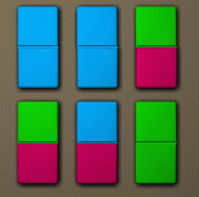

Dominoes is a game played with rectangular tiles. Each tile (domino) is split in half, and each half is painted with some color. It takes one second to repaint one half of a domino. Return the minimal time needed to make all the dominoes look the same (a domino can be rotated in no time, so a domino painted red and blue looks the same as a domino painted blue and red).
You will be given a String[] dominoes. Each element of dominoes will be formatted as "A1 B1 NUM1 A2 B2 NUM2 ... Ak Bk NUMk", where each triple (Ai, Bi, NUMi) represents NUMi dominoes painted with colors Ai and Bi, where Ai and Bi are each integers..
Class: ColoredDominoes Method: optimalRepaintings Parameters: String[] Returns: int Method signature: int optimalRepaintings(String[] dominoes) (be sure your method is public)
0)

{"0 0 2 1 2 2", "0 2 1", "1 1 1"}
Returns: 6
0 represents blue, 1 represents green, and 2 represents red. The best choice is to repaint every domino blue-red.
1)
{"0 0 1 0 0 1 1 1 1"}
Returns: 2
2)
{"1 2 1", "2 1 1"}
Returns: 0
Nothing to repaint.
3)
{"1 2 1", "2 3 1"}
Returns: 1
4)
{"1 2 2500", "3 4 2500"}
Returns: 5000
5)
{"1 2 1", "1 3 1", "1 4 1", "5 6 1", "7 6 1", "8 6 1"}
Returns: 6
This problem statement is the exclusive and proprietary property of TopCoder, Inc. Any unauthorized use or reproduction of this information without the prior written consent of TopCoder, Inc. is strictly prohibited. (c)2003, TopCoder, Inc. All rights reserved.